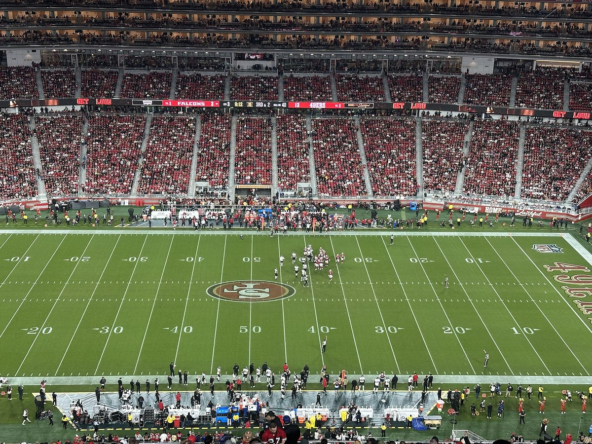
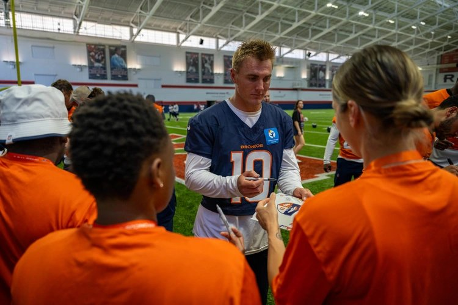
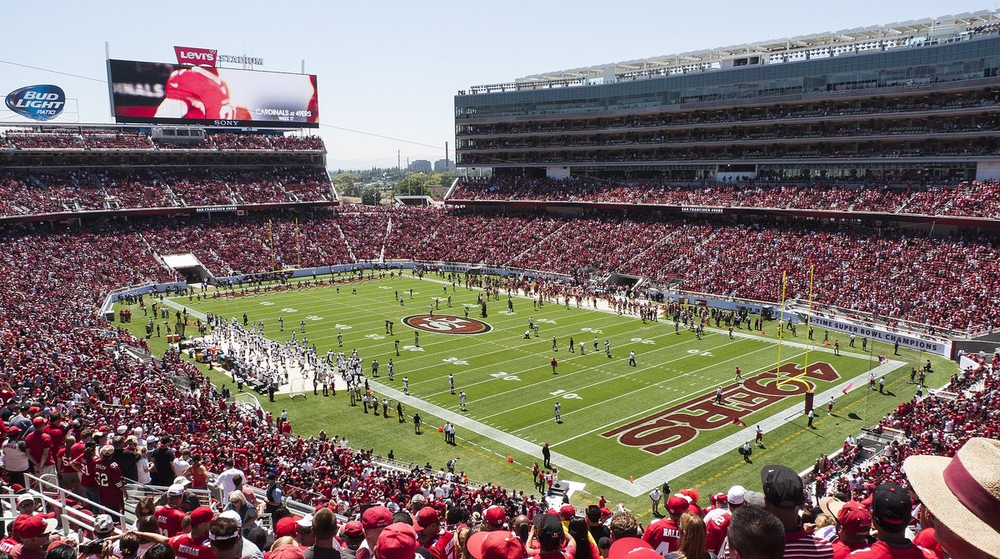

49ers vs Broncos Preview: Denver Is the First Real Test of This 3 and 0 Team
Sunday, 1:25 PM Pacific at Levi's. Nick Bosa's out, Denver blitzes like it's personal, and Brock Purdy still hasn't been sacked this year. What we need to see, what scares me, and how I think it goes.

I've had this one circled since the schedule came out in May. Not Melbourne, not the Dolphins, not Arizona. This one.
Denver comes into Levi's on Sunday at 1:25, and I don't want to hear afterward that the Niners just weren't sharp. The Broncos are too good for that. They went 14 and 3 last year, they were the top seed in the AFC, and they led the whole league with 68 sacks. If San Francisco gives away possessions, settles for field goals in the red zone, or lets Brock spend the afternoon on his back, they're asking for it.
We're 3 and 0. We've scored 98 points in three games. And I'm nervous anyway, which if you've rooted for this team for more than a week, you already understand.
The biggest test of the season?
Yeah. I think it is, and it's not close.
Look at who we've beaten. A Rams team that had just flown to Australia with us, a Dolphins team that isn't very good, and an Arizona team that came within a couple of plays of stealing one in our building with Jacoby Brissett throwing it 52 times. I'll take all three. I'm not giving any of them back. But none of them were a measuring stick.
Denver is. That's a well coached team, Sean Payton's team, with the best corner in football and a defense that was a nightmare for everybody last season. They're 2 and 1, and the one loss was a 31 to 10 beating in Kansas City on a Monday night where nothing went right. Since then they've won two straight, and the most recent one tells you everything about them. They were down 16 to 0 to the Rams on Sunday night. Didn't panic. Bo Nix led two touchdown drives with two point conversions on both, Talanoa Hufanga (yes, that Hufanga, our Hufanga) took an interception 66 yards the other way, and Nix punched in the winner from a yard out with 47 seconds left.
That's a team that doesn't go away. We beat that same Rams team 27 to 7. Fine. It doesn't mean we'd beat Denver by 20.
And there's the part that gets me. This is the first game this year where I genuinely don't know what's going to happen. A win here and the 3 and 0 start stops being a nice schedule and starts being a real thing. A loss and every guy at work who's been calling us frauds since August gets to feel smart for a week. I don't want to give them that.

What I need to see from Brock Purdy
Purdy has been ridiculous. 60 of 83, 789 yards, nine touchdowns, one interception, and a 133.1 passer rating through three games. He's averaging 9.5 yards every time he throws it. Against Arizona he was 15 of 27 for 297 and four scores, and he had a long touchdown run called back on a Kittle hold. If you want to put him in the MVP conversation, I'm not going to stop you. I've been defending this guy's numbers for three years, so excuse me while I enjoy it.
But Denver is the kind of defense that makes quarterbacks hold the ball and then punishes them for it. They come after you. Our own coordinators spent the week calling them blitz heavy, and anybody who watched them last year knows exactly what that means.
So I don't need 300 yards from Brock. I need the ball out on time. I need him to see the extra rusher coming, check to the hot throw, and take the eight yards instead of hunting for the 40. When he does extend a play, and he will, I need the throw to go away from Pat Surtain and not toward him. One bad decision against a defense like this is a short field, and a short field against a team that just came back from 16 down is how you lose a game you were controlling.
Small side note, because I can't help myself: he's 64 attempts short of the 1,500 the league requires to put him on the official career passer rating list. It probably won't happen Sunday. It's coming, and I'm tracking it on our Purdy stats page like a lunatic.
How the Niners should attack Denver's defense
Run it at them. Then run it again.
This is the weird part. The Broncos defense everybody remembers isn't the one on film this September. They're giving up 143.7 rushing yards a game. Kenneth Walker ran for 173 on them in Kansas City, including a 60 yard touchdown, and the Chiefs piled up 220 on the ground that night. They missed tackles all over the field. The Rams moved it on them too, 482 total yards, and Denver only won because Los Angeles kept kicking field goals instead of scoring touchdowns.
Meanwhile we're running for 136.3 a game at 5.1 a carry. Christian McCaffrey has 166 yards and three touchdowns, Kaelon Black has chipped in 107, and Purdy's scrambled for 93 of his own. If Kyle Shanahan doesn't lean on that, I'm going to be yelling at my TV by the second quarter, and my wife has already asked me to stop doing that.
Running the ball also does something else. It slows down the blitz. A defense that has to respect outside zone can't send six every snap, and that's when the play action shots open up.
Protection, Trent, and the blitz
Zero sacks allowed through three games. Zero. That's the first time the franchise has ever done that, and I'm almost afraid to type it out because it feels like the kind of thing you jinx.
The asterisk is Trent Williams. He left the Arizona game in the third quarter, Vederian Lowe finished it at left tackle, and Shanahan said early this week he expected Trent to be good to go by Thursday's practice. If Trent plays, I feel fine. If he doesn't, Lowe is going to see a lot of Nik Bonitto and a lot of help needs to slide his way, which means fewer guys out in routes.
Inside is where I'd worry. Zach Allen already has three sacks and he's the kind of interior rusher who lives in the quarterback's face. Purdy's at his best when he can step up. If Allen is collapsing the pocket from the middle, there's nowhere to step.

Kittle, Deebo, Evans, and where the mismatches are
I'll be honest, I didn't think this receiver room would be functional this year. Ricky Pearsall's done for the season. De'Zhaun Stribling and Demarcus Robinson are on IR. Christian Kirk's on IR. Brandon Aiyuk isn't with the team. It's been a hospital ward.
And somehow it works, because George Kittle is still George Kittle. Twelve catches, 174 yards and three touchdowns, two of them in the fourth quarter against Arizona when we needed every one. Deebo Samuel has 159 receiving yards in his return, 80 of them on that hook and lateral from Mike Evans that I've now watched more times than my own wedding video.
I think I know where we can hurt them. Surtain is going to take away whoever he lines up on. Fine, let him. Kittle against linebackers and safeties is the matchup I want all day, and Deebo after the catch against a defense that's been missing tackles is the other one. Get Deebo the ball short and let him do the thing where three guys bounce off him.
Evans is the question. He left Arizona on a cart with a rib injury and didn't practice Thursday. The front office keeps saying he's old school and doesn't want to miss. I love that. I also don't want a 33 year old receiver with bad ribs taking a shot from Brandon Jones over the middle, so if he's limited, I'd rather see Jordan Watkins and Jacob Cowing get real snaps than watch Evans gut through something that costs us him for October. If you want the full picture of what Evans means to this offense, we wrote about it in the summer.
Denver's biggest threats
Start with the defense, because that's still who they are even with the run problems. Surtain. Allen. Bonitto off the edge. Hufanga, who already has two picks and knows exactly how Shanahan's offense thinks because he spent four years in it. That last one bugs me more than it should. He's going to be jumping routes he's seen a thousand times in practice.

On offense they've actually been ordinary. Nix is completing 60.2 percent with four touchdowns and three interceptions, the run game is averaging 3.6 a carry, and they're scoring 20 a game. But Jaylen Waddle changes the math. He had 138 yards against Jacksonville in his second game with them, and he's the guy who can turn one coverage mistake into seven points. Courtland Sutton is still there, Evan Engram's still there, and Nix is dangerous late in games. He just showed us.
The thing I'd circle: they're converting 36 percent on third down. If Raheem Morris's defense can get them into third and long, they don't have a lot of answers. That's the whole game for our defense, honestly. Win first and second down.
The injuries that matter on Sunday
Bosa's out. Shanahan said it Monday, the calf that's been bugging him isn't ready, and I've already done my yelling about that calf. James Thompson Jr is out with an ankle. Keion White, who leads us with two sacks, is questionable with a hamstring. Romello Height is questionable with his hand. Dre Greenlaw didn't practice Thursday with a quad. Mykel Williams had his practice window opened Wednesday, which is great news for later this season and no help at all for this week.
Put that together and our pass rush is thin. Really thin. Against a quarterback who's at his most dangerous when he has time and a receiver like Waddle running free, that's the scariest sentence in this preview.
Denver, meanwhile, is pretty healthy. Linebacker Dondrea Tillman missed Wednesday and Thursday with a hamstring, guard Nick Gargiulo's out with a knee, and outside linebacker Jonathon Cooper hasn't been available. That's about it. The full list on our side, updated a few times a day, is on the 49ers injury report.
Four matchups that decide it
- Our tackles against Bonitto and the edge blitz. Whether it's Trent or Lowe at left tackle, this is where the zero sacks streak lives or dies.
- Kittle against Denver's linebackers and safeties. If he's catching five or six balls, we're winning.
- Our depleted front against J.K. Dobbins and the Denver run game. They can't run it well right now. If they suddenly can against us without Bosa, it's a long afternoon.
- Our corners against Waddle. Renardo Green has been good. He's going to need to be great, because Waddle is the one guy on that offense who can win the game by himself.
The little stuff that swings close games
Turnovers first, always. We've only given it away twice in three games. Denver's taken it away four times, and one of those went back for six. Every ball that comes out on Sunday is going to feel like the season.
Third downs. We're at 63 percent this year, which is absurd and also not something you can count on against this defense. Red zone, we've finished 90 percent of our trips with touchdowns. That number is going to drop. The question is whether it drops to settling for threes, which is the fastest way to lose to a team like this.
Penalties. We've had 16 for 168 yards, and you all remember the holding call that wiped out Purdy's touchdown against Arizona. I don't need a flawless game. I need no drive killers.
And the kicking. Eddy Pineiro missed two extra points last week. That's how a 23 to 6 lead turns into a two point game in the fourth quarter. Against Denver, a missed PAT might be the margin, and I'm already sweating it.
What worries me
The time of possession against Arizona. They held the ball for 38 minutes and 44 seconds. Our offense was on the field for barely 21. When your pass rush is banged up and the other team can dink and dunk, your own offense sits on the bench and gets cold, and your defense gets gassed. And Sunday's forecast at Levi's is around 90 degrees. Anybody who's sat on the east side in October knows exactly how that sun feels by the third quarter.
I'm also worried about the Hufanga thing more than I'll admit in front of anybody. He knows us. He's going to be sitting on routes.
Why I still feel good
Because our offense is better than their offense, and it isn't particularly close right now. We're scoring 32.7 points a game. They're scoring 20. We're at home. Purdy's playing the best football of his life behind a line that hasn't allowed a sack, and Denver's run defense has been genuinely bad for three weeks.
Also, this one has some family history in it. Kyle Shanahan's dad won two Super Bowls coaching Denver. Klay Kubiak's dad won one. My own dad still brings up 55 to 10 every time the Broncos come up in conversation, which he did again on the phone Tuesday without me even asking. I'll take the omens where I can get them.
The number
When I checked the lines Thursday night, Oct 1, around 9:45 Pacific, the 49ers were 3 point favorites with some books at 2.5, and the total was sitting at 47.5. That feels right to me, which is annoying, because I wanted something to complain about. This isn't a betting site and I'm not telling you what to do with your money. I'll just say a three point line at home means the market thinks these teams are basically even on a neutral field. I don't fully agree. I'd lean our way.

What a win would mean, and what would still bug me
A win puts us at 4 and 0 heading to Seattle the next week, with a real win over a real team in the bank. It also means Purdy did it against a defense built to stop exactly what he does, which shuts up a lot of people for a while. That's worth more than the one game in the standings.
But I already know what would still bug me if we win. If Denver controls the clock again the way Arizona did. If Nix gets comfortable because nobody's getting home without Bosa. If we turn two red zone trips into field goals and survive on a late stop. A win like that counts the same. It just doesn't tell me what I want to know about January.
My prediction
I think it's close for a long time. I think Denver gets to Purdy at least once and the streak dies, and I think I'll overreact to it. And I think the run game wins it in the second half, McCaffrey and Black wearing down a front that's been missing tackles all month, with Kittle catching something big on third down that makes me stand up in my living room again.
49ers 26, Broncos 20. Four and oh. Then I can finally stop pretending I'm not already thinking about Seattle.
Every game this year, preview and reaction, lives on the 2026 49ers schedule hub. Who's actually healthy is on the roster and depth chart. If you missed last week, this is how we survived Arizona, and before that, the Dolphins game and the night in Melbourne.
1:25. Wear sunscreen if you're going. Wear the lucky jersey either way.
More coverage: 49ers · NFL · Bay Area Sports Blog home